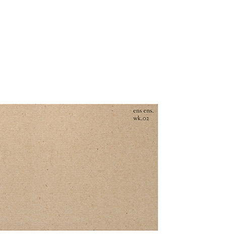

works
performance

toward the south plains
2019 - presentinstallation

gestures
2019 | photography
repetition
2019 | photographystudies

portraits
2017 - 2018 | photographysmyer, tx 2016 + ephemera
2019 | generative sketchmusic

pieces
ryan todd garza
2016 | digital
headed out
2016 | live studio recordingEns Ensemble
ENS [ɛnz] noun, abstract being; existence, in the most abstract sense.
Ens Ensemble is a moniker used by Ryan as an outlet to voice creative explorations regardless of the state of proficiency or perfection. The wk (week) collections are an endeavor to perform and release one track per day for nine weeks.

wk01
ens ensemble
2019 | digital

wk02
ens ensemble
2019 | digital
-
links
- AllMusic credits